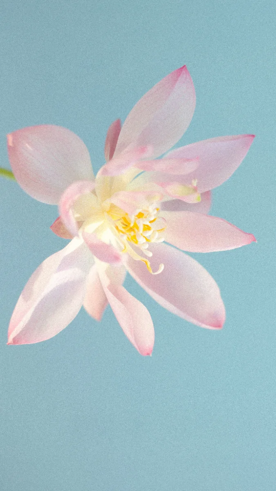

Flowers · Seasons · Slow Days
花日和
Hanabiyori
No.01 ———— Flowers · Seasons
花日和
Hanabiyori
Scroll ↓
No.02Seasonal Gifts · 花禮推薦
這個季節，送一束剛好的花
依心意挑選，點進花禮即可前往訂購系統，選日期、時段與送達方式。
No.03Weekly Bloom Report · 花海通報
本週，正在開的花海
每週四更新。花海與楓紅、欒樹等季節景色，花況、最佳時段與交通，一次看完。
Near You · 離你最近的花海
依日期挑出這個時節在開的花海，選擇出發地即可依距離排序。
花況會因天氣提前或延後；標示「花況未確認」者為依花期推估，出發前請先查官方公告。距離為直線估算。
Flower Journal · 花誌
每週四，收一封花海通報
隨時可取消。